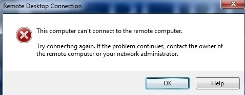
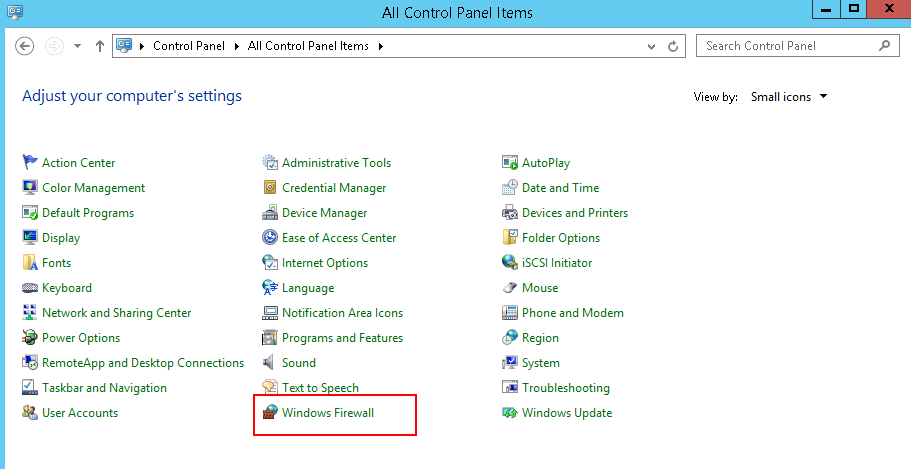
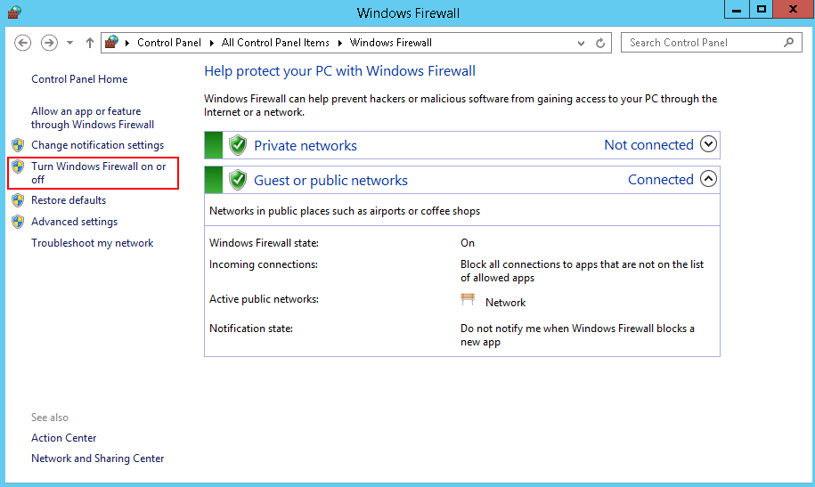
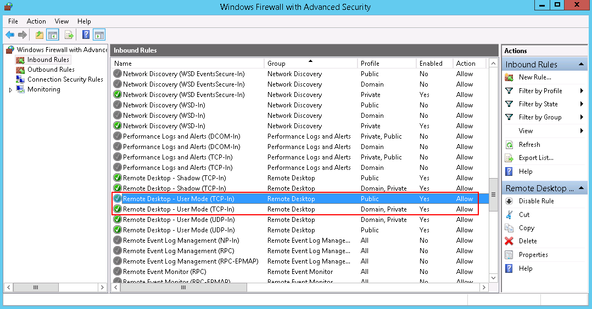
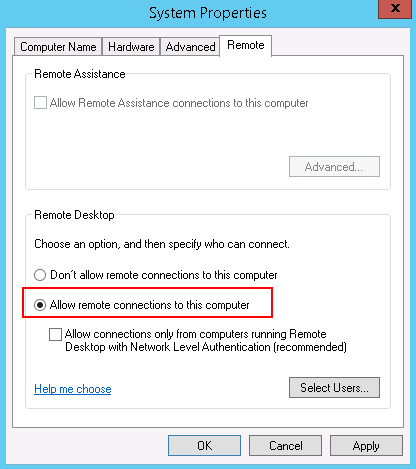
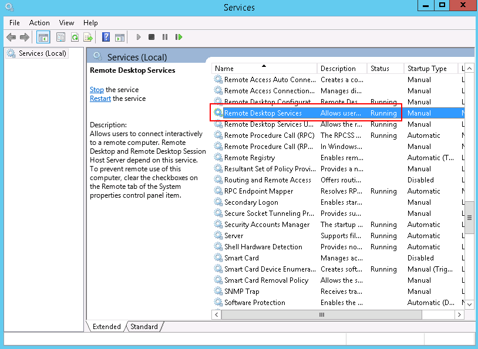
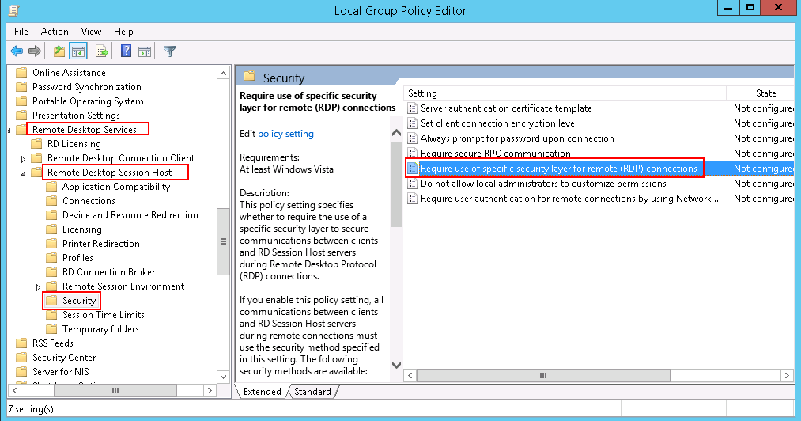
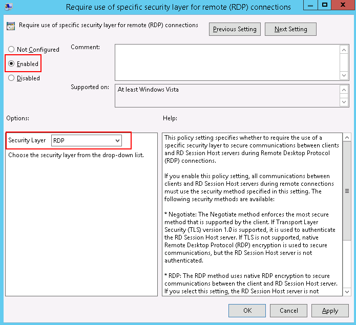

Symptom
An error message is displayed indicating that your local computer cannot connect to the remote computer.

Possible Causes
- Port 3389 of the security group on the ECS is disabled. For details, see Checking Port Configuration on the ECS.
- The firewall on the ECS is disabled. For details, see Checking Whether the Firewall Is Correctly Configured.
- The remote desktop connection is not correctly configured. For details, see Checking Remote Desktop Connection Settings.
- Remote Desktop Services are not started. For solution, see Checking Remote Desktop Services.
- Remote Desktop Session Host is not correctly configured. For details, see Checking Remote Desktop Session Host Configuration.
Checking Port Configuration on the ECS
Check whether port 3389 (used by default) on the ECS is accessible.
Ensure that port 3389 has been added in the inbound rule.
On the page providing details about the ECS, click the Security Groups tab and view port 3389 in the inbound rule of the security group.
Checking Whether the Firewall Is Correctly Configured
Check whether the firewall is enabled on the ECS.
- Log in to the ECS using VNC available on the management console.
- Click the Windows icon in the lower left corner of the desktop and choose Control Panel > Windows Firewall.Figure 2 Windows Firewall
 - Click Turn Windows Firewall on or off.
View and set the firewall status.
Figure 3 Checking firewall status
To enable Windows firewall, perform the following steps:
- Click Advanced settings.
- Check Inbound Rules and ensure that the following rules are enabled:
- Remote Desktop - User Mode (TCP-In), Public
- Remote Desktop - User Mode (TCP-In), Domain, Private
Figure 4 Inbound Rules
If the port configured in the inbound rule of the firewall is different from that configured on the remote server, the remote login will fail. If this occurs, add the port configured on the remote server in the inbound rule of the firewall.

The default port is 3389. If you use another port, add that port in the inbound rule of the firewall.
After you perform the preceding operations, try to remotely log in to the ECS again.
Checking Remote Desktop Connection Settings
Modify the remote desktop connection settings on the Windows ECS:
- Log in to the ECS.
- Click Start in the lower left corner, right-click Computer, and choose Properties from the shortcut menu.
- In the left navigation pane, choose Remote settings.
- Click the Remote tab. In the Remote Desktop pane, select Allow connections from computers running any version of Remote Desktop (less secure).Figure 5 Remote settings
 - Click OK.
Checking Remote Desktop Services
- Open the Windows search box, enter services, and select Services.
- In the Services window, restart Remote Desktop Services. Ensure that Remote Desktop Services is in the Running status.Figure 6 Remote Desktop Services

Checking Remote Desktop Session Host Configuration
- Open the cmd window and enter gpedit.msc.
- Click OK to start Local Group Policy Editor.
- Choose Computer Configuration > Administrative Templates > Windows Components > Remote Desktop Services.
- Choose Remote Desktop Session Host > Security > Require use of specific security layer for remote (RDP) connections.Figure 7 Require use of specific security layer for remote (RDP) connections
 - Set Require use of specific security layer for remote (RDP) connections to Enabled and Security layer to RDP.Figure 8 Setting security layer to RDP
